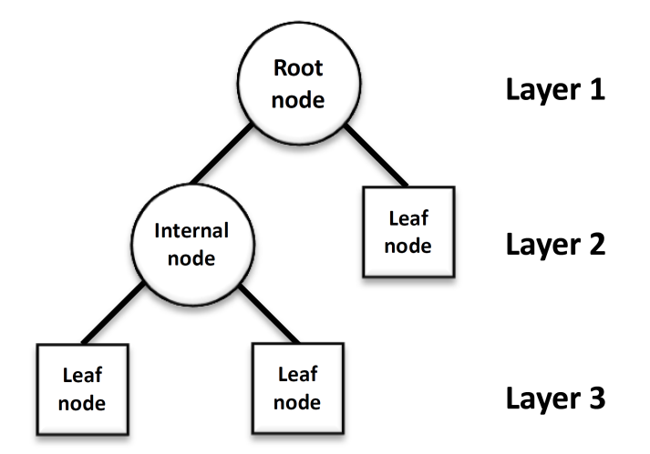
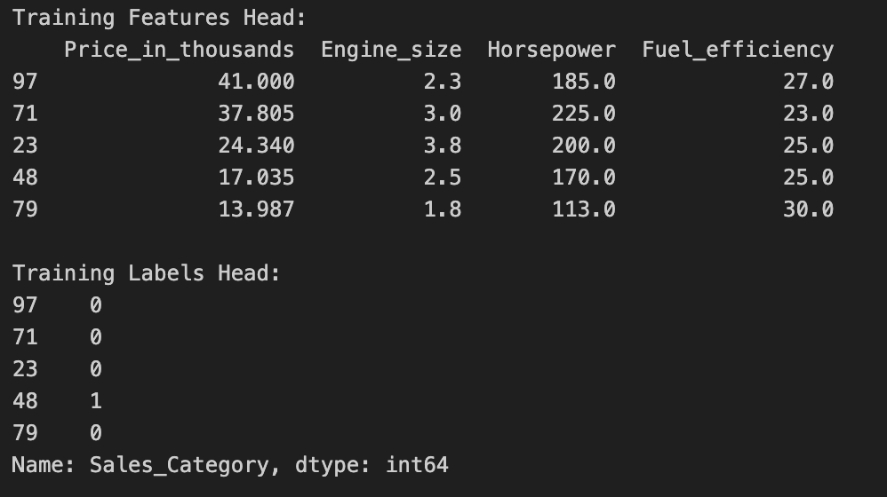
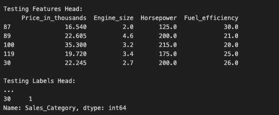
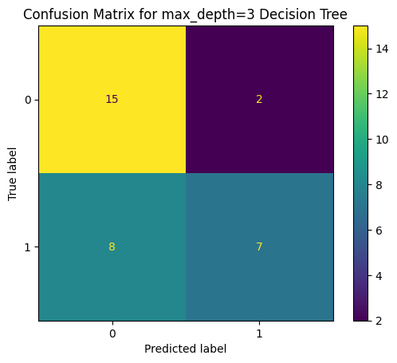
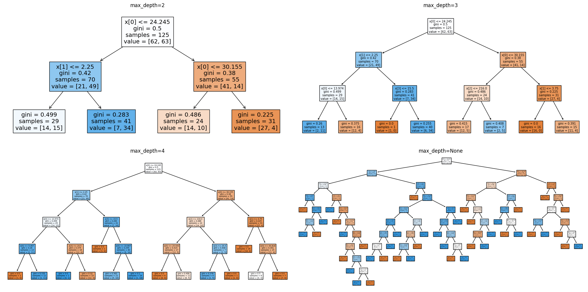
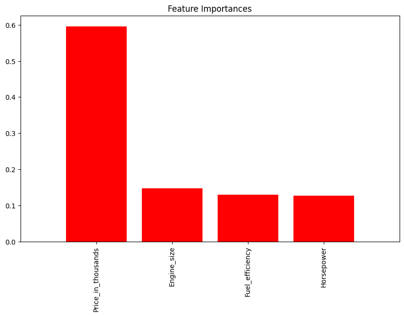

Overview
Decision Trees (DTs) are a type of machine learning algorithm used for both classification and regression tasks. They model decisions and their possible consequences by creating a tree-like structure of decisions and their outcomes. Decision Trees are intuitive and easy to understand, making them popular for a wide range of applications, from customer segmentation to diagnosing medical conditions.
How Decision Trees Work:
A Decision Tree splits data into branches at decision nodes, where each branch represents an outcome of the decision taken. This process starts at the tree's root and continues until a leaf node is reached, which provides the prediction or decision outcome. The key to a Decision Tree's performance is the method it uses to decide where to split the data.
Criteria for Splitting: GINI, Entropy, and Information Gain
- GINI Impurity: A measure of how often a randomly chosen element from the set would be incorrectly labeled if it was randomly labeled according to the distribution of labels in the subset. GINI impurity is used in the CART (Classification and Regression Trees) algorithm. A GINI score gives an idea of how good a split is by measuring how mixed the classes are in the two groups created by the split. The best split is chosen by minimizing the GINI score.
- Entropy: A measure of the randomness or disorder in the dataset. Higher entropy means higher disorder. In the context of Decision Trees, it's used to measure the impurity or diversity of a dataset. The goal of using entropy in Decision Trees is to find splits that decrease disorder (reduce entropy) in the dataset.
- Information Gain: Calculated by comparing the entropy before and after a split. It measures the change in entropy, indicating how much uncertainty in the dataset was reduced after the split. Decision Trees aim to maximize Information Gain when choosing where to split the data.
Example Using Entropy and Information Gain:
Consider a dataset with 10 samples, 6 of which are from Class A and 4 from Class B. The entropy before the split is calculated and then compared after a split to assess the "goodness" of the split through Information Gain.
Infinite Trees:
It is generally possible to create an infinite number of trees due to the flexibility in choosing split points and the depth of the tree. Without constraints, a Decision Tree can continue to create new splits to perfectly classify the training data, leading to overfitting. This is why methods like pruning and setting a maximum depth are important to prevent an overly complex tree.
Visual Aids:


The images above illustrate two key aspects of Decision Trees:
- Basic Decision Tree Structure: Demonstrates a basic decision tree with a root decision node that splits into two branches based on a binary decision. Each branch leads to further decision nodes or leaf nodes, representing final decisions or outcomes.
- Entropy and Information Gain Concept: Showcases the concept of Entropy and Information Gain with a dataset split. It illustrates a dataset before the split, containing mixed classes, and how it is divided into two groups after the split, highlighting the reduction in disorder (entropy).
Example Calculation and Infinite Trees explanation:
Consider a simple dataset and a split that results in groups with distinct class instances. Calculating entropy for each group and then Information Gain provides insight into how Decision Trees use these metrics to optimize splits. The potential for creating an infinite number of trees is discussed, emphasizing the importance of constraints in tree construction to avoid overfitting.
Data Prep
Supervised learning models require labeled data, meaning each observation in the dataset must have an associated label or target variable that the model aims to predict. This fundamental requirement allows the model to learn the relationship between the features (input variables) and the target (output variable) during the training phase. Once trained, the model can predict the target variable for new, unseen data based on the learned patterns.
Splitting Data into Training and Testing Sets
To evaluate the performance of a supervised learning model reliably, the data is split into two sets:
- Training Set: Used to train or build the model. It includes both the features and the labels. The model learns the relationships between the features and the target variable from this subset of the data.
- Testing Set: Used to test or evaluate the accuracy of the model. It also includes both features and labels, but this data is not shown to the model during training. The purpose of the testing set is to assess how well the model performs on data it hasn't seen before, providing an estimate of its generalization ability to new data.
The training and testing sets must be disjoint to ensure an unbiased evaluation of the model's performance. If there's overlap, the model might simply memorize specific data points rather than learning the underlying patterns, leading to overfitting. By evaluating the model on a separate testing set, we can better understand its ability to generalize to unseen data.
Using the Car.csv Dataset
The Car.csv dataset, which includes features like Price_in_thousands, Engine_size, Horsepower, Fuel_efficiency, and the sales (which can be transformed into a categorical target variable for classification tasks), serves as an example of labeled data suitable for supervised learning.
Sample of Data: Let's discuss how we split it into training and testing sets.
Splitting the Dataset
To split the dataset into training and testing sets, we typically use a ratio to divide the data-common ratios include 70:30 or 80:20 (training:testing). This split ensures that the majority of the data is used for training the model, while a sufficient portion is reserved for testing its performance on unseen data. The split must be done randomly to ensure the training and testing sets are representative of the overall dataset.
Why Training and Testing Sets Must Be Disjoint
The training and testing sets must be disjoint to ensure the model's performance evaluation is unbiased and reflects its ability to generalize to new data. If the testing data overlaps with the training data, the model's performance metrics might be overly optimistic, not accurately reflecting its performance in real-world scenarios.
This process is crucial for assessing the predictive performance of supervised learning models in a realistic and unbiased manner. By ensuring the training and testing sets are disjoint, we prevent information leakage and overfitting, contributing to a more accurate evaluation of the model's performance on data it has not encountered during the training phase.


Code
The code to perform Decision Tree classification or regression on the dataset is provided in the following link:
Decision Trees Code
Results
The analysis utilizing Decision Tree classifiers to predict car sales categories based on features such as price, engine size, horsepower, and fuel efficiency has provided significant insights. Let's discuss, illustrate, and visualize the results derived from the "DecTrees.pdf" document, summarizing the approach and findings of using Decision Trees in this context.
Approach and Model Training
The analysis began with preprocessing the car dataset by handling missing values and categorizing sales into binary classes based on the median sales value. Features were selected, and the dataset was split into training and testing sets. Decision Tree classifiers were then trained on this data, experimenting with different depths to observe the impact on model performance.
Model Performance and Accuracy
The initial Decision Tree model achieved an accuracy of 68%, which signifies a fair level of predictive capability but suggests room for improvement. Further experimentation with the depth of the Decision Trees yielded varied accuracies, with a focus on optimizing model complexity to balance underfitting and overfitting.
Visualizations and Analysis
Decision Trees of Different Depths: Visualizations of Decision Trees with different maximum depths were provided, showcasing how the complexity of the model increases with depth. Trees with depths of 2, 3, 4, and None (no maximum depth) were compared to illustrate the decision-making process at each node and to highlight how the models differentiate between the classes based on feature values.
Confusion Matrix for Max Depth=3 Decision Tree: The confusion matrix for the Decision Tree with a maximum depth of 3 was shown, providing insights into the model's performance, including the numbers of true positives, true negatives, false positives, and false negatives. This visualization helps in understanding the model's predictive strengths and weaknesses in classifying the sales categories.
Feature Importances: A bar chart illustrating the importance of each feature in the Decision Tree's decision-making process was presented. This visualization is crucial for identifying which features most significantly impact the model's predictions, guiding potential adjustments to feature selection and engineering for model improvement.
Conclusions
The analysis demonstrates the applicability of Decision Tree classifiers in predicting sales categories based on car features. The models show a reasonable level of accuracy, with room for optimization. Key takeaways include:
- Depth Impact: The depth of a Decision Tree significantly affects its performance and generalizability. A balanced depth helps in achieving an optimal model that neither overfits nor underfits.
- Feature Significance: Understanding which features most influence the model's decisions can guide further data preprocessing and feature engineering efforts to improve model performance.
- Visualization and Interpretability: Decision Trees provide an interpretable model, where the decision process can be visualized and understood, making them valuable for insights and decision-making in real-world applications.



Conclusions
Several conclusions can be drawn regarding the use of Decision Tree classifiers to predict sales categories in the automotive industry. The analysis has provided valuable insights into the predictive capabilities of Decision Trees and highlighted the importance of feature selection and model complexity in achieving accurate predictions. Here are the key takeaways:
Predictive Capability of Decision Trees
The application of Decision Trees has demonstrated a substantial capacity to predict sales categories based on various car features, such as price, engine size, horsepower, and fuel efficiency. The models achieved varying levels of accuracy, with a notable instance achieving 68% accuracy. This showcases Decision Trees' potential as a tool for classification tasks within the automotive sector, offering a baseline for understanding factors influencing car sales.
Impact of Model Complexity
Through experimenting with different depths for the Decision Trees, it became evident that the complexity of the model (i.e., the depth of the tree) significantly affects its performance. A tree with a depth of 3 was particularly highlighted for its balance between being simplistic enough to avoid overfitting and complex enough to capture the necessary patterns in the data. This finding underscores the importance of carefully tuning model parameters to optimize performance.
Feature Importance
The analysis shed light on the relative importance of different features in predicting sales categories. By evaluating feature importances, it became clear which attributes of the cars had the most significant impact on sales. This information is crucial for manufacturers and marketers in understanding consumer preferences and can guide strategic decisions related to production, marketing, and sales efforts.
Insights and Applications
The use of Decision Trees and the analysis of their performance offer practical insights into the automotive market:
- Consumer Behavior: Understanding which features influence car sales the most can provide insights into consumer behavior and preferences.
- Market Trends: The ability to predict sales categories based on car features can help identify emerging market trends and shifts in consumer demand.
- Product Development: Manufacturers can use these insights to tailor their product development strategies, focusing on the features most likely to increase sales.